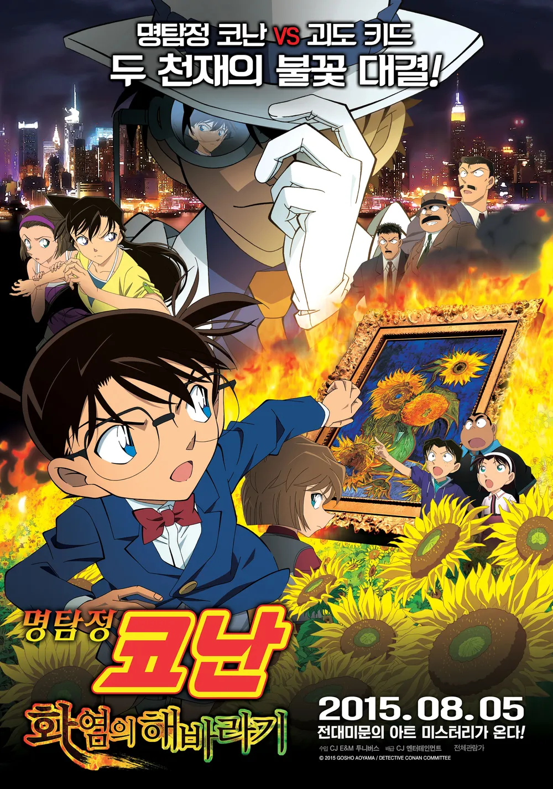

명탐정코난 : 화염의 해바라기
방영 시기: 2015.4.18
국내 상영일:2015.8.5
고흐의 해바라기를 둘러싸고 괴도 키드와 대결을 벌이는 시리즈 열아홉
번째 작품,
3기의 명탐정 코난: 세기말의 마술사 8기의 명탐정 코난: 은빛 날개의
마술사 10기의 명탐정 코난: 탐정들의 진혼가 14기의 명탐정 코난:
천공의 난파선에 이은 괴도 키드의 5번째 출연작으로. 명탐정 코난
극장판 제19기.
44.8 엔의 일본 수입과
5.2천만달러의 월드 박스오피스수입을 달성했다.
키드가 오프닝의 역동적 액션으로 시선을 사로잡기는 했으나, 범인의
이해 못 할 동기와 사연등 추리 파트는 이번에도 비판을 받았다.
일본어판의 경우 미야다이 나츠미 성우의 연기가 너무 어색하다는 평가를
받는다.
특히 아래 언급할 가위질 탓인지는 몰라도 개연성이 별로 좋지 못하다.